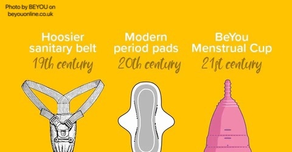

History
The histories of monthly cycle and menstrual care are regularly ignored, in spite of nearly 50% of the world's populace encountering periods at a few point in their lives. The utilize of menstrual care items goes back centuries: in old Greece, build up wrapped around wood was utilized as a tampon, and greenery as well as buffalo skin were utilized as cushions by Local Americans. Within the 18th and 19th centuries, ladies in Europe utilized woven fabric or wool to create hand crafted cloth cushions. These might be washed and re-used, illustrating a more feasible and prudent alternative, but still distant less sterile than the arrangements numerous are usual to nowadays.
Feminine cycle has frequently been considered unthinkable in Western social orders. In any case, old Egyptian therapeutic writings, for illustration, state that menstrual blood can be utilized in ointments for wellbeing medications. On the other hand, the primary Latin reference book from 73 Advertisement expressed: "to taste it drives pooches frantic and contaminates their nibbles with an serious harm". Within the 19th century, negative affiliations with monthly cycle were propogated broadly, indeed by therapeutic experts. An 1811 distribution titled, The Standards of Birthing assistance, composed by Dr John Burns, states that feminine cycle is "to be considered a malady". Such shame contrarily affected the lives of ladies, and implied that menstrual items may not effectively be advertised. Women were hesitant to be seen acquiring items with negative essences, and as a result, the primary commercially accessible menstrual items were monetarily unsuccessful.

A Critique of the Colonial Cleanliness Crusade:blog.apaonline.org/
In the 19th century, the concept of cleanliness underwent a profound transformation in Euro-American society. Bathing was a rare occurrence, and hygiene practices were minimal. However, as we delve into this historical shift, it becomes evident that these changes were not merely a matter of personal hygiene. Instead, they were deeply entangled with evolving notions of race, gender, and power dynamics.
During the 19th century, gynecology was emerging as a field, but it carried with it horrific experiments on Black women, who were often subjected to medical procedures without anesthesia. Menstruation was framed as a disease, perpetuating the idea that women were unclean and diseased for a significant portion of each month. This notion of uncleanliness further marginalized women from active participation in society, reinforcing gender hierarchies.
Furthermore, the cleanliness of white women was presented as a sign of civilization and white supremacy. Soap companies capitalized on this idea by manufacturing products like vaginal deodorants and douches, reinforcing the myth that women needed these products to maintain their cleanliness and social status. This era also saw the emergence of strict gender norms, where white women were encouraged to avoid outdoor work, further solidifying the idea that appearing clean was as important as being clean.
References
1, V&A (2023). Sanitary suspenders to Mooncups: a brief history of menstrual products · V&A. Victoria and Albert Museum. https://www.vam.ac.uk/articles/a-brief-history-of-menstrual-products#:~:text=The%20use%20of%20menstrual%20care,to%20make%20homemade%20cloth%20pads.
2, Annie Ring (2021). A Critique of the Colonial Cleanliness Crusade. Blog of the APA. https://blog.apaonline.org/2021/11/03/a-critique-of-the-colonial-cleanliness-crusade/#:~:text=Appearing%20clean%20through%20wearing%20white,as%20a%20sign%20of%20civilization..